Table Of Content
1) Getting Started (Top ↑)
i. Upload WYNN
- If you have not set up your Wordpress installation yet, you can grab a copy of latest Wordpress version here.
ii. Install and Activate The Theme
You can install and activate the theme in more than one ways as give below -
- Go to
Appearances > Themes > Add New. Clicking on Add New to add the theme will Install and Activate your theme
- You can Install the theme using any FTP program, by uploading the entire 'WYNN' folder (find it in your
Downloaded File > wp-content > themes) to the corresponding folder on your server (http://yourdomain.com/wp-content/themes/) - To Activate the theme, login to your blog, and goto
Menu > Appearance > Themes. Available themes will show 'WYNN'. Click on 'Activate' button under WYNN.
iii. Recommended Wordpress Settings
Comments [optional] - Goto Menu > Settings > Discussion and under 'Other comment settings' check the following two options:
- Enable threaded (nested) comments
- Break comments into pages
2) Importing Sample Content (Top ↑)
- Goto
Menu > Tools > Importand click on Wordpress.
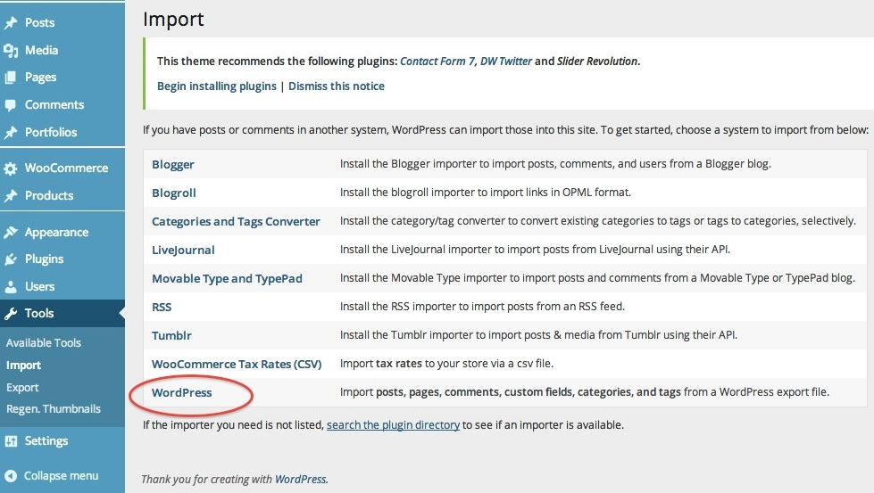
- You may have to install the Wordpress Importer plugin at this stage. A pop-up window will be seen. Proceed based on the instructions seen in the window to get the Importer pluugin installed.
- Browse for the sample content file (
Downloaded File > Sample Content > wynn-sample-data.xml), and hit 'Upload File' button. It may take a while for Wordpress to download and import file attachments.
This video tutorial on Importing Demo Content into WordPress gives more details on how to import the content
3) WYNN Options - General Settings (Top ↑)
General
Options > Appearance > WYNN Options > General
- Enable Page Builder - Check this option, to enable page builder across the theme. However, you have option to disable the Page Builder in individual pages that is present within the PageBuilder. More details will be available on the section on Page Builder
- Logo - To upload your Logo
- Favicon - To upload your Favicon
- Copy Rights text - Type out the Copy Rights text in the place holder here
- Google Analytics ID
- Custom CSS - You can provide your custom CSS code here. The CSS given in this section will supersede the styling defined in the core theme files. With this provision you can have the default theme styling overwritten.It is very vital that you do not change the theme core files to modify the styling. You can use the Custom CSS option, or create Child CSS pages. If the core files are changed, it will result in the loss of the custom changes you made, when an update is released
- Custom Javascript -You can provide any additional Java Script functions in the text box here.
Background
Options > Appearance > WYNN Options > Background
BODY
- Background None - Check this if you choose no background.
- Check this (only) if a single image has to be scaled as the background. You can choose from the list of images that is provided by us, or upload an image of your own choice. Make sure appropriate brackgroud settings are made.
- Custom Background - Check this to be able to upload any pattern/image and use the styling options given beneath
Similar background settings are available for the other elements in a page - Header, Body and Sub Menu.
Typography
Options > Appearance > WYNN Options > Typography
Options to modify the Typography is given here. For each element you have the option to Modify any of the following, Font Family, Size, Line Height, Style, Weight, Transform and Color.
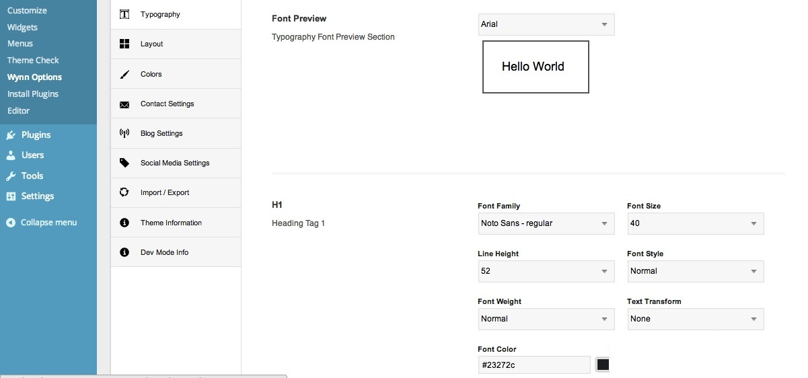- You have the provision to modify all of the following elements like:
- H1 - H6
- Body Text
- Sidebar Widget Title
- Sidebar Widget Text
- Footer Text
- Navigation Menu text
Layout
Options > Appearance > WYNN Options > Layout
- Show Comments Section in Pages - Check this option if you want the comments to be shown in your pages.
- Products Per Page - If you have the Shop set up, then you can give the number of Products to be shown in one page here
- Header Layout - You can choose to have the Header as 'Top Bar' or 'Side Bar'
Custom SideBars
You also have options to create custom sidebars and use them in the individual website pages. Here is the step wise instruction to define a custom side bar and put to use in any of the page
- Go to
Options > Appearance > WYNN Options > Layoutand Click on the 'Add More' link to declare a new Sidebar. Give a name and click 'Save Changes' button at the bottom of the page.
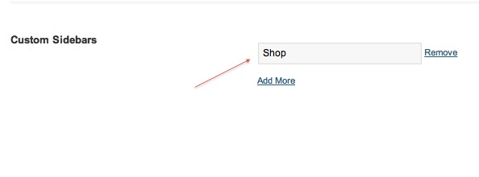
- Go to
Options > Appearance > Widgets. You can see your new side bar added beneath the default sidebars in the right side of this page. Expand the section to customize and define your new side bar. Once this is done, your side bar is ready to be used across pages.
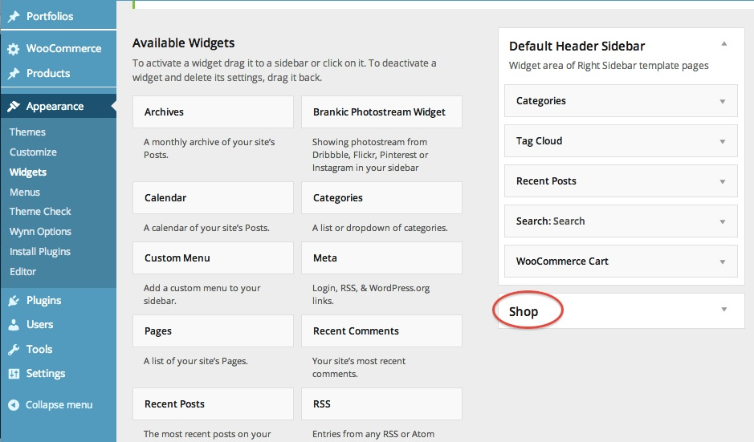
- Now, this side bar will appear in the 'Page Side bar' options under 'Pages'
Options > Pages > Add New.
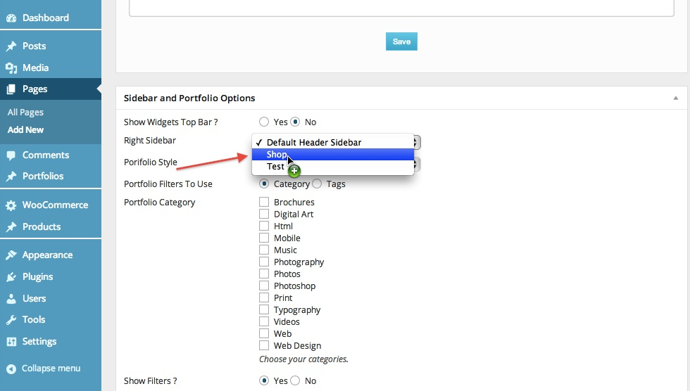
Colors
Options > Appearance > WYNN Options > Colors
- Color Scheme - Pick a color from the palette here. This is the theme color, that appears across the website.
- Text Color on a background which has the above Color Scheme - Pick a color from the palette for the text with the Theme color as background 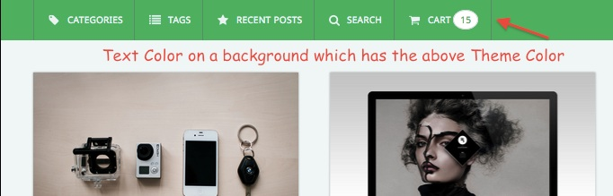
THEME COLOR
- Secondary Background Color - Pick the back ground color for these sections
- Secondary Text Color - Pick the Text color for these sections
- Secondary Title Color - Pick the Title color for these sections
- Secondary Border Color - Pick the border color for these sections
SECONDARY BACKGROUND
Background Color of certain shortcode and widget elements such as Blockquotes, Testimonial, Boxed Style portfolio, Blog Elements, Tabs, Accordion, Text boxes etc
- Meta Colors - Text Color of Meta Information like Portfolio Categories, Blog Post Date etc
- Separator Color
- Menu Hover Text Color
- Active Menu Text Color
- Slider Arrow Background Color
- Slider Arrow Color
- Woo Commerce Secondary Button Background Colors
COLOR OPTIONS FOR OTHER ELEMENTS
Contact settings
Options > Appearance > WYNN Options > Contact settings
Load the details below, that will show un in your contact page and contacts widget
- Contact Address
Social Media settings
Options > Appearance > WYNN Options > Social Media settings
Choose the icons that need to be displayed with the Social Media Widget. Use this option to direct your visitors to follow your social media profiles/URL.Below are the list of social media widgets that we support,
- Google Plus
- Dribble
- Pintrest
- YouTube
- Yahoo
- Flickr
- Skype
Import/Export
Options > Appearance > WYNN Options > Import/Export
Here you can copy/download your themes current option settings. Keep this safe as you can use it as a backup should anything go wrong. Or you can use it to restore your settings on this site (or any other site). You also have the handy option to copy the link to yours sites settings. Which you can then use to duplicate on another site. Do make sure you are take a back up of the existing content whenever you are updating the theme
Page Builder (Top ↑)
The Page Builder in WYNN can be used to construct any page entirely. All the elements required for a Webpage can be added/edited using the Page builder. This section explains how to use the Page Builder and its endless possibilities.
Alternately, we also provide you with an option to disable the Page Builder and build the pages using the conventional Wordpress content editor.
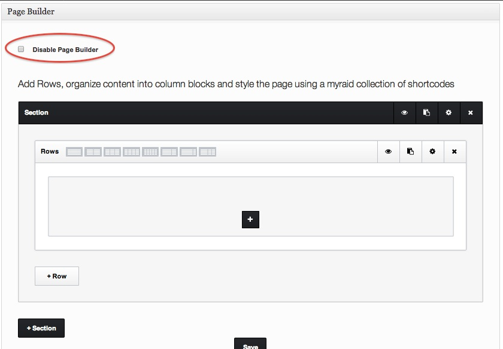Section, Row and Column
Options > Pages > Add New
Sections, Rows and Columns are the basic elements that are used to construct a page using the Page Builder. A Page will be broken into one or more Sections. One Section can have one or more Rows and in turn, one Row could be formed with one or more Coulmns. The module/actual content of a page, is written inside the respective Columns.
Before you get to construct your page with the Page Builder, please note that you have to Name the page and either save it (in drafts) or publish it. Without naming and saving/publishing the the page, the configuration done using the Page builder will not take effect on the Page.
As and when you make changes to the page using the Page Builder, the changes will be Auto Saved. However deletion and re-positioning of the modules will not be Auto-Saved. Please make sure you click the Page Builder 'Save' button in cases when you do not see the Changes reflecting in the Web Page.
SECTIONS
-
Add Sections -
- In the below image -
- You have to Click on (1)Add Section to add a new Section to your page
- Click on (2) Delete to delete an existing Section from the page
- Click on (3) Duplicate to replicate an existing Section in the page
- Click on (6) to have the visual preview of your section contents in the page builder(The visual preview is not possible for all shortcodes)
Make sure you Click on Save (4) after you make any change on the Page Builder, for the changes to take effect in the page
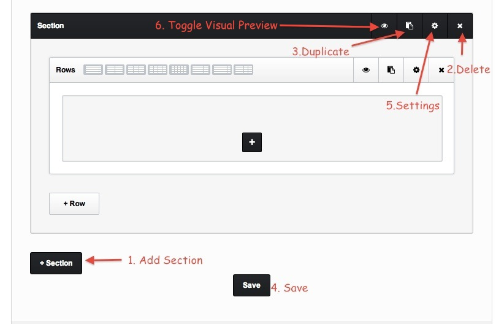
-
Section Settings -
Click on the icon(5) in the above image to get the Section Settings page opened.
- Background Color
- Background Image - Upload any image that you want as background for this section.
- Background Repeat
- Background Attachment
- Background Position
- Center Scale - Scale the image to fit in the container.
- Parallax Effect on Section
- Border Size - Make sure you give in only numerics for this options. Do not use 'px' or any other unit as well.
- Border Color
- Top Padding - Make sure you give in only numerics for this options. You can use the padding to position the contents within a section.By default, every section will have a top padding of 50px. This can be modified as per your design
- Bottom Padding - Make sure you give in only numerics for this options. You can use the padding to position the contents within a section. By default, every section will have a bottom padding of 50px. This can be modified as per your design
- Enable Backgroud video
- MP4 Video file link
- Enable Background Overlay
- Background Overlay Color
- Background Overlay Opacity


-
Illustration from the demo -
This shows how a section parallax effect and background overlay will look like. From this demo you can see that the top and bottom padding of the section can be altered to position the text/content in the section

ROWS
-
- You have to Click on (1)Add Row to add a new Row to your page
- Click on (2) Delete to delete an existing row from the page
- Click on (3) Duplicate to replicate an existing row in the page
- Click on (5) to have the visual preview of your Row contents in the page builder(The visual preview is not possible for all shortcodes)
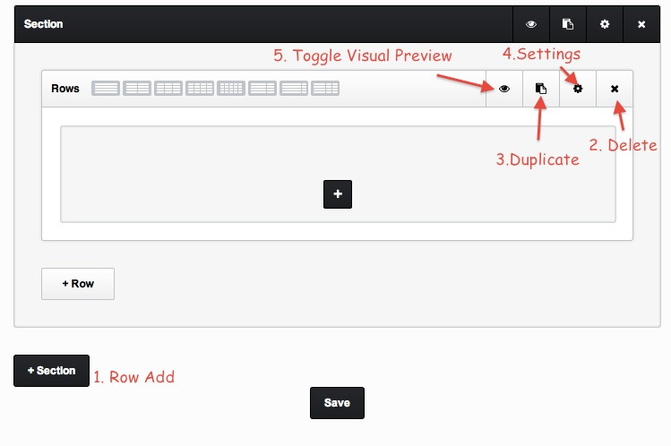
-
Row Settings -
Click on the icon(4) in the above image to get the Row Settings page opened.
- No Wrap - You can check this option, if you want the Section containing this Row, to occupy the full width of the viewing device. 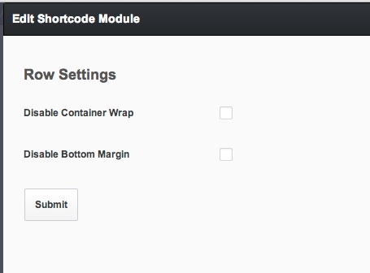
COLUMNS
-
Add Columns -
As you might have seen, One Row in a section is same as having one full-width column in the section. Additionally you can add more columns and choose various layouts. Click on any of the buttons here to modify the layout of your section.Once you have done that click (2)Save
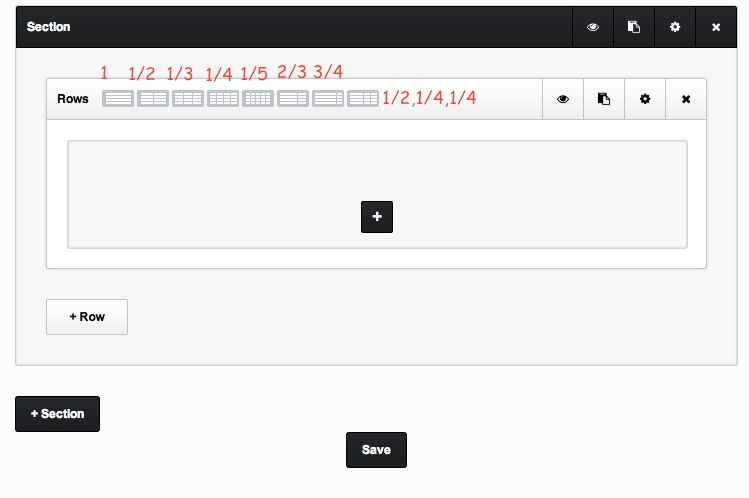
Page Builder and Shortcodes
Once you have formed the layout of your page using the Sections, Rows and Columns, you can start filling the page up with Content - all using the numerous Short codes avaialble. Click on the '+' and open the list of short codes. Watch the video tutorial here : https://vimeo.com/86183720

All the short codes have certain parameters that can be configured in way to suit your design.
In this section we go over each short code and its respective parameter configurations. The basic element like the Text Box is also provided as a shortcode. The explanation about the Text Box short code is given as Item 19
-
ACCORDIAN
This is a Multi Short code and can have multiple 'TOGGLE' short codes within it. Click on the 'View' Button that appears in the Accordian section, and click on the '+' sign. This will open up the Toggle short code Settings. Enter the details according the section below. Add as many Toggle Elements as you need within an Accordian
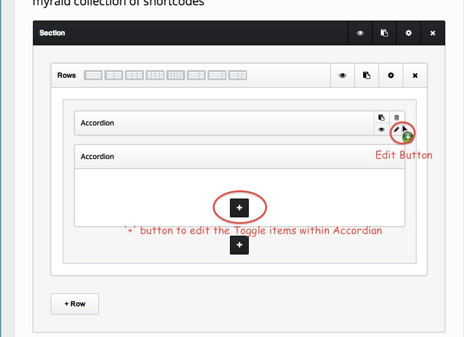TOGGLE
The Toggle Shortcode is used along with the 'Accordian shortcode' List of Parameters:- Accordian Title - Title of the Accordian Toggle Element
- Accordian Content - Content of the Accordian Toggle Element
-
ANIMATED NUMBERS
List of Parameters:- Number - Enter the number here
- Caption
- Number Size
- Number Color
- Caption Size
- Caption Color
-
BUTTONS
List of Parameters:- Button Text - Enter the Button text here
- Button Size - Choose between Small, Medium and Large
- Gradient
- Rounded Corners - Check this if you want Rounded Corners for the Button
- Button Icon - Pick an Icon for the Button if required
- Default Background Color - Pick a color for the Background for your Button. This will by default by the Theme Color that you choose. But it can be modified
- Hover Background Color - The color you pick here, will be the color for the Hover State of the Button
- Button Link - Enter the link to which the Button click will navigate
-
CUSTOM LIST
This is a Multi Short code and can have multiple 'CUSTOM LIST ITEM' short codes within it. Click on the '+' button beneath to add the child CUSTOM LIST ITEM element
CUSTOM LIST ITEM
List of Parameters:- Icon - Pick an Icon from the List
- Circled - Check this option, if you want the Icon to be enclosed in a Circle
- BG of the Icon , if circled - Pick a color as BG, if you had checked the previous option
- Icon Color - Choose a color for your icon
- Content - Enter the Content of the List Item in the content box given
-
DIVIDER
List of Parameters:- Style - We offer 2 styles for Divider. Choose between 'Style 1' and 'Style 2'
- Color - Pick a color for the Divider
-
EXTRA SPACING
List of Parameters- Height of the Blank Space - Enter the height of the spacing that you want. Please make sure you enter only the number here. Do not specify 'px' or any other unit here.
-
FLEX SLIDER
List of Parameters:- Animation Style - Choose between Fade and Slide
- Auto Slide - You can turn on/off the auto slide option
- Slide Iterval - If you chose the Slider to 'Auto slide' in the previous option, set the time interval between the Slides in here
This is a Multi Short code and can have multiple 'SLIDE' short codes within it. Click on the '+' button beneath to add the child SLIDE element
SLIDE
List of Parameters:- Choose a Slider Image - Choose the image for the Slider
- Youtube/Vimeo URL - Enter Youtube/ Vimeo url if you wish to have video in the slide
- Show Title - Choose to have/not title for the Slider
- Show Caption - Choose to have/not Caption for the Slider
- Title - Enter title here
- Caption - Enter Caption here
-
FONT ICONS
List of Parameters- Icon - Pick from the List of Icons
- Size - Choose between Small, Medium and Large
- Style - Choose between Circle, Plain and Square
- Icon Color - Pick the Color of your Icon
- Background Color of the Icon - Pick a Background Color here, If you choose the Style as Circle/Square
- Icon Color on Hover - Color of the Icon on Hover
- Background Color of Icon on Hover - BG Color for the Icon on Hover
- Icon Link URL - Enter the Link for the Icon, if applicable
- Check box for Center Align the Font Icon
- Check box for Animate the block
- Animation Type
-
GOOGLE MAP
List of Parameters- Address - Address to point in the Map
- Height in px - Enter the height of the Map. The default height is set to 300px. Please make sure you enter only the number here. Do not specify 'px' or any other unit here.
- Zoom Value - Enter Zoom Value
-
LIGHT BOX IMAGE
List of Parameters- Choose a thumbnail Image - The image that is uploaded here will be shown in light box
-
NOTIFICATIONS
List of Parameters:- Background Color for Notification - This can be based on the type of your notification
- Notification Content - Enter the Notification Content in the content box
=====================================================================================================
-
PORTFOLIO
This Short Code is particularly for a Boxed and Full Width Portfolio Pages.
List of Parameters:- Portfolio Style - Choose between 1.Boxed, 2. Full Width with Gutter or 3.Full Width - Edge to Edge
- Portfolio Masonry Layout - Choosing Yes - will resize the image based on aspect ratio with out cropping. Choosing No - will crop the images to a specific dimension
- Portfolio Items Enable LightBox - Yes or No to have to portfolio items opened in Lightbox
- Portfolio Items Enable Title
- Portfolio Items Enable Category
- Filterable Portfolio - Choose Yes if you want to filter your images
- Filter to use - Choose between Tags or Categories, if you choose the Portfolio to be filtered in the previous option
- Portfolio Categories - Pick the list of Categories to be shown in your Portfolio Page
- Pagination - Choose between 'LoadMore' - to enable pagination, or 'None' to disable pagination
- Number of Items per page if paginated - If you choose to enable Pagination, give the number of items to be listed at first, here. This value will not be considered, if the Pagination is disabled
=====================================================================================================
-
PREMIUM SLIDERS
This Short Code has to be used to include the Slider that you will create using the 'Revolution Slider'. The instructions on how to create the slider can be found in the section on Sliders. Add the Name of the Slider in the content Section here, to get the Slider displayed. Note - Revolution sliders can be used only with the 'Premium Slider' shortcode. Note that the theme does not come with the Revolution Slider. But if you wish to purchase it, the slider can be used with this Short Code.
-
SKILLS BAR
This is a Multi Short code and can have multiple 'SKILLS' short codes within it. Click on the '+' button beneath to add the child SKILLS element
SKILL
List of Parameters:- Skill Name - Name of the Skill
- Skill Score in % - Percentage of the Skill Score
-
SPECIAL TITLE HEADING
List of Parameters:- Content/Title - Enter the Title/Heading in the Content Section given
- Heading Tag to use - Choose the size in which the title should be
- Separator Color
- Alignment
-
TABS
This is a Multi Short code and can have multiple 'TAB' short codes within it. Click on the '+' button beneath to add the child TAB element
TAB
List of Parameters:- Tab Title - Enter the Title for the 'Tab'
- Choose an Icon - Pick from the List of Icons
- Tab Content - Enter the Tab Content in the Content box given.
-
TEAM
List of Parameters:- Title - Title of the team
- Heading tag used for Title - Choose the size of the Heading tag to be used
- Description - Enter description for the Team
- Team Member Image - Upload the Team member Image here.Please make Sure the width of the Image uploaded here is at the least 460px
- Designatin - Designation of the team member
- Facebook Profile Url
- Twitter Profile Url
- Google Plus Url
- Linked In Profile Url
- Youtube Profile Url
- Dribbble Profile Url
- Animated Block
- Animation Type
-
TESTIMONIALS
List of Parameters- Animation Style
- Slide Interval
This is a Multi Short code and can have multiple 'TESTIMONIAL' short codes within it. Click on the '+' button beneath to add the child TESTIMONIAL element
TESTIMONIAL
List of Parameters:- Choose a Testimonial Author image - Upload the Author image here
- Author - Enter the name of the Author here
- Company - Enter the company name here
- Testimonial Content - Enter the Content of the Testimonial in the content box given
-
TEXT BLOCK
- Content
- Animate Block
- Animation Type
This is the short code to insert plain content in the website. This is pretty straight forward and does not have any parameters.
List of Parameters: -
TITLE WITH ICON
List of Parameters:- Style - Choose the size of your Icon
- Icon - Pick an Icon that you want with the Title
- Circled - Check this option, if you want the Icon to be enclosed in a Circle
- BG of the Icon , if circled - Pick a color as BG, if you had checked the previous option
- Icon Color - Choose a color for your icon
- Upload Custom Icon as Image - Provision to upload custom Icons
- Title
- Heading tag For the Title - Choose the size in which the title should be
- Content - Type out the content for this section in the Content Section beneath.
-
VIDEO
List of Parameters:- Choose a video Style - Choose between Youtube and Vimeo
- Enter the Video URL - Enter the embed URL for the video here
For Portfolio Page
WYNN Page templates (Top ↑)
List of Templates
Options > Pages > Add New
WYNN comes with 4 different page templates
- Default Template - The default page template can be used to create most of the pages in the site, including the Boxed and Full Width portfolio pages.
BOXED

FULL WIDTH - EDGE TO EDGE

FULL WIDTH - WITH GUTTER
 Detailed tutorial on how to set up portfolio pages using the default template and the Page Builder is given in a video tutorial
Detailed tutorial on how to set up portfolio pages using the default template and the Page Builder is given in a video tutorial
- Contact - The contact page will pull the Contact Information given in the sections under
Options > Appearance > WYNN Options > Contact settings - Portfolio - This page template is used primarily to create the Vertical Portfolio. Detailed tutorial on how to set up portfolio pages using the Portfolio template and Page Meta Options is given in a video tutorial
- Gallery
Once you have chosen a template for you page, you are ready to get started with constructing you page using the Page Builder. You can find more about the Page Builder in the section above
Page Meta box settings
- Show Widgets Top Bar - Pick Yes or No if you want the top bar to be shown in the page.
- Widget Area - Choose the Widget for your Right Sidebar(as applicable). The Custom Sidebars that you add will also be listed in here. 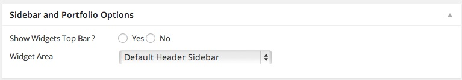
SIDEBAR AND PORTFOLIO OPTIONS
- Vertical Portfolio or Horizontal Carousel Gallery - Boxed Style with 4 corner padding- Yes or No Option for Padding
- Vertical Portfolio or Horizontal Carousel Gallery - Gutter between images - Yes or No Option for gutter spacing
- Portfolio Items Enable Title
- Portfolio Items Enable Categories
- Portfolio Category
- Show Posts - Enter the number of posts to be shown. This is applicable for the Blog Page 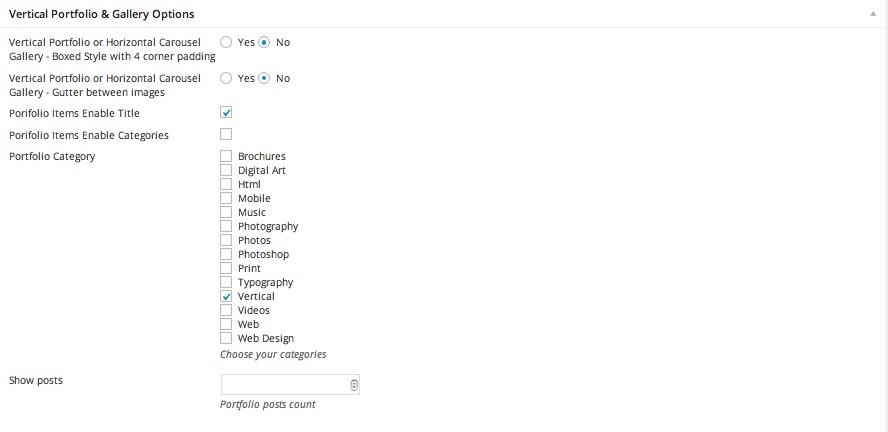
VERTICAL PORTFOLIO AND GALLERY OPTIONS
The Meta Options in this pane are primarily for Vertical Portfolio and Gallery pages.The illustration for the four possible combinations of the above options are shown below
Boxed - NO ; Gutter - NO

Boxed - NO ; Gutter - YES

Boxed - YES ; Gutter - YES

Boxed - YES ; Gutter - NO

- Gallery Style - Choose between Horizontal Carousel Slider, Centered Slider or Full Screen Slider
- Gallery Images - Upload the images for the gallery here 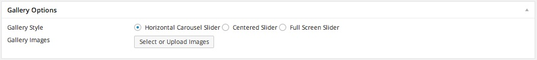
GALLERY OPTIONS
The Meta Options in this pane are primarily for GallerySetting up a Blog Page
Plese follow the instructions as in steps given below to Set up your Blog Page
-
Options > Appearance > WYNN Options > Blog SettingsConfigure the Settings for you Blog page here. Detailed instructions on this section are given under General Settings > Blog Settings of this documentation.
-
Options > Pages > Add NewGive a name to the page that you will be setting up as the Blog Page. Choose the 'Blog Template' as the page type. Once you have named the Page, go ahead and save it.
-
Options > Settings > ReadingChoose the Page that you created as the 'Posts Page' here

Page Navigation
Options > Appearance > Menus
You can use the usual WP method to create the menu for navigation
WYNN Custom post types (Top ↑)
WYNN offers 1 custom post type for portfolio
Portfolio
Options > Portfolio > Add New
In a portfolio post type, you can -
- Choose appropriate categories and tags for the images
- Add a featured image for the portfolio, which will be seen as the thumbnail image. The provision to upload a featured image is present in the bottom right part of the page. This featured image will be displayed in the expanded version, in case when there are no images uploaded to the portfolio, but not otherwise.
- Add a header and description for the portfolio. This has to be given in the post content section.
- Project Meta
- Project URL - Enter the URL for the portfolio item.
- Portfolio Single Page Style - Choose from the 4 options, how the Single portfolio page will look like
- Slider Images - If your 'Single Portfolio Page' is one of the Slider types (previous option), you will have to upload the respective slider images using this provision here. Note that you can also rearrange the order of the images by dragging them to appropriate position
- Show Project Title
- Portfolio Items Enable Title
- Portfolio Items Enable Category 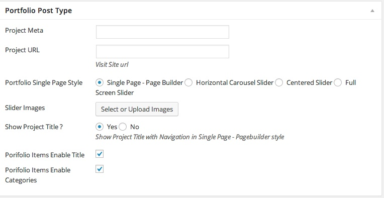
Use the Page Builder under the Portfolio Post Type, to construct the Single Portfolio Pages. More instructions about using this can be found in previous Section on Page Builder 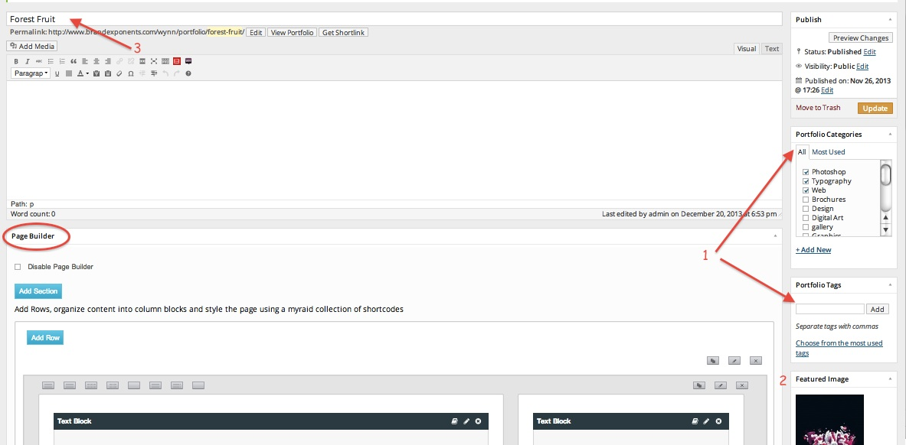
WYNN Sliders (Top ↑)
Flex Slider
Another slider that is supported in WYNN is the Flex Slider. You can create and use Flex Slider in any Page of your Website. Please find the detailed Instructions on how to create and use it, under the Flex Slide section using Page Builder
Woo Commerce Settings (Top ↑)
Below are the steps to install Woo commerce plug in and set up the Shop in WYNN
- The first thing you should do is download the Woo-Commerce plugin
- You will be able to see a 'Pink Color' notification that reads Install Woo Commerce Pages once the plugin is in place. Click on this notification and install. Clicking the Install Pages option, will create the Shop, Cart, My Account, Check Out and other Shop related pages
- The next step, would be to Select the Shop Page. In the options panel, Go to
Woo Commerce > Setting > Pages Tab > Shop Base Page. Pick the Shop page from this drop down, as shown in the image below
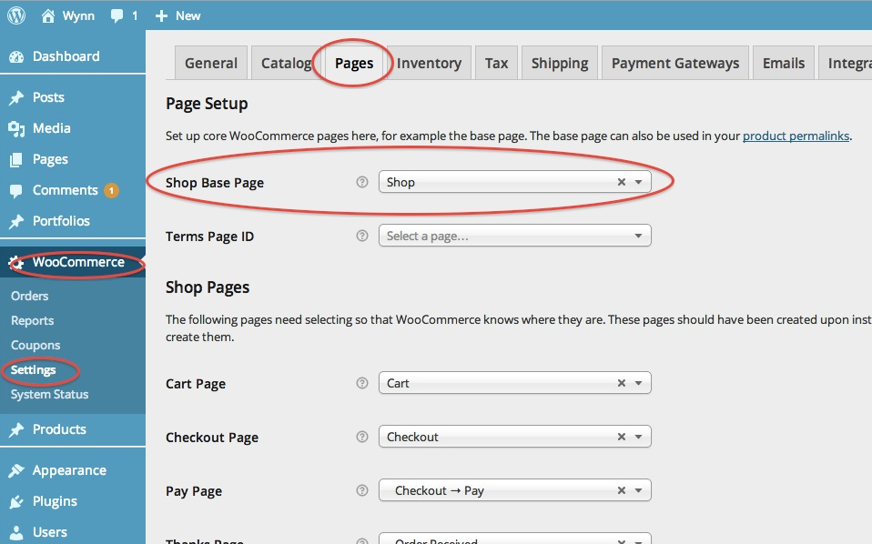
- Once you shop is set up, you can select the number of items to be displayed in the Products Page from here
Options > Appearance > WYNN Options > Layout. Give the number of products in the Products Per Page option here. Apart from setting up the number of Products per Page, you may also create a Custom Sidebars for Shop from this section of the Options Panel.
Apart from setting up the number of Products per Page, you may also create a Custom Sidebars for Shop from this section of the Options Panel.
The Shop page that pulls all the Products by default, can be additionally styled using our powerful Page Builder. For Example - the section with a video seen in the Shop Page set up in our demo, is created using the Page Builder.
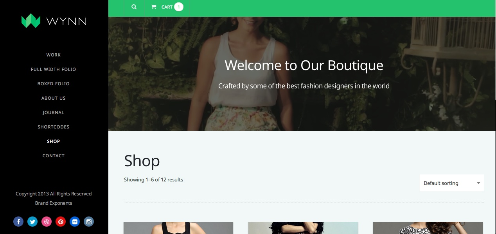WYNN Custom Widgets (Top ↑)
WYNN offers 8 custom widgets that can be added to any page -
- Contact
- Recent Posts
- Recent Comments
- Newsletters
- Dribble feed
- Instagram feed
- Flickr feed
- Social Media Icons
Must Read for WYNN (Top ↑)
Our theme comes with a whole set of features. Here are the list of the Must-Reads about our theme. Users that are familiar with Wordpress, should be able to configure the theme, with just reading these sections.
8) Sources & Credits (Top ↑)
9) Contact Me / Support Forum (Top ↑)
Thank you for purchasing my theme. I look forward to offer extensive support for my users. You can contact in more than one ways
In case of any queries you could do either of these,- Post the query in our dedicated Support Forum
- Contact in Skype - Skype ID: brandexponents
- Drop an email to gkswami.2006@gmail.com
Creator - Swami